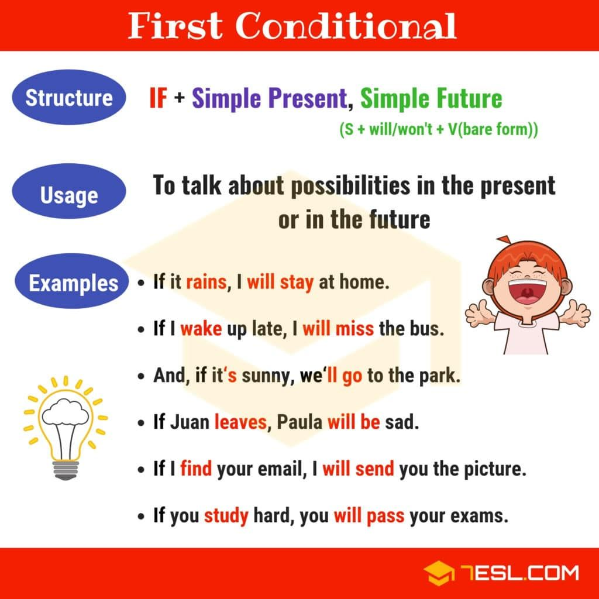

Explanation
Conditionals describe the result of a certain condition.
- The if clause tells you the condition (If you study hard)
- the main clause tells you the result (you will pass your exams).
- The order of the clauses does not change the meaning.
If you study hard, you will pass your exams.
will pass your exams if you study hard.
Frist conditional
We use the first conditional when we talk about future situations we believe are real or possible.
- If it doesn't rain tomorrow, we'll go to the beach.
- Arsenal will be top of the league if they win.
- When I finish work, I'll call you.
It is also common to use this structure with unless, as long as, as soon as or in case instead of if.
- I'll leave as soon as the babysitter arrives.
- I don't want to stay in London unless I get a well-paid job.
- I'll give you a key in case I'm not at home.
- You can go to the party, as long as you're back by midnight.
In first conditional sentences, the structure is usually: if/when + present simple >> will + infinitive.
